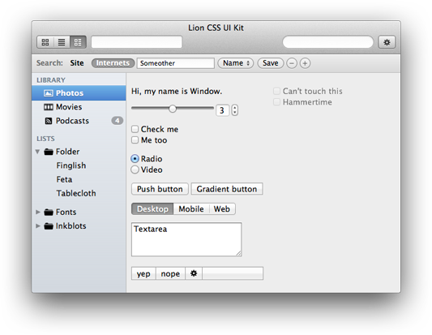

 Lion CSS UI Kit
Lion CSS UI Kit
For web designers wanting to prototype native apps for Mac OS X.
Download the kit Fork on Github
Feedback
Any input would be greatly appreciated.
Tweet to @sakamies Email sakamies@gmail.com
Compatibility
The kit is based on Xcode components on OS X Lion. Since the kit is for prototyping OS X apps, it's mainly made for Webkit, but should work mostly fine in any browser that supports gradients and flexboxes.
Usage
Copy & paste is your friend. The html is just form elements with classes, and simple containers for any multi-part controls.
The selection in lists and segmented controls are handled with radio buttons. Disclosure triangles are checkboxes styled using -webkit-appearance: none; The source list should probably be handled with javascript, so expect it to change in the near future.
Most of the styles are not tied to any context, so you can just apply a class to style an element in any way you wish. The classes are named after the actual component names in Xcode.